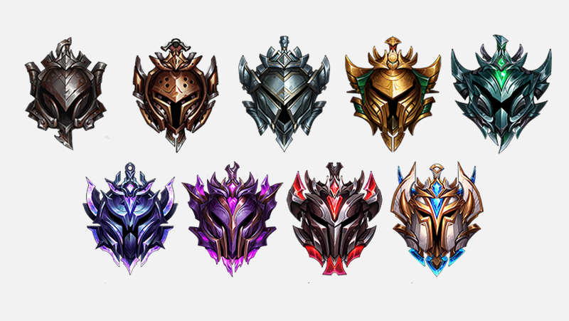

- <브론즈>
- <실버>
- <골드>
- <플레티넘>
- <다이아>
브론즈
이건 자랑 아닌 자랑인데 필자는 사실 브론즈 티어에 간 적은 부캐로 배치볼 때 말고는 없음. 시즌2 때 롤 시작해서 시즌3에 랭겜 배치로 7승3패하고 실버2인가 그 쯤 배치받았던 거로 기억함. 암튼 그래서 브론즈에 관해선 잘 모름. 그래도 얼마 전에 내 친구 브론즈 계정으로 랭겜을 돌린 적이 있는데(브론즈1) 겜하면서 든 생각은 일단 여기 얘들은 생각보다 멘탈은 괜찮음. 솔직히 난 브론즈를 되게 트롤이 판치고 즐겜만 하는 유저들만 모인 곳이라고 생각했는데 의외로 픽도 정상적이고 트롤링하는 유저들도 없었음. 실력이 트롤이긴 한데...라고 할뻔 ㅋㅋ. 아무튼 티어가 브1이여서 실버에 가고 싶어서 그런가 다 열심히 하더라. But 브론즈는 브론즈. 피지컬, 판단이 아쉬운 경우가 상당히 많음. 예를 들어 끝낼 수 있는 상황인데 바론을 치거나, 4대5인데 먼저 한타를 걸거나 이상한 일이 많이 생김. 가끔 가다가 이게 내가 하던 롤인가라는 생각도 들음. 요약하자면 멘탈은 생각보다 괜찮은데 실력적으로 많이 미흡한 티어라고 할 수 있겠다. 아 그리고 이건 딴 얘긴데 여기서 부캐라고 하는 얘들치고 잘하는 사람 못 봤다 ㅋㅋ.

실버
롤 유저의 절대 다수층인 실버임. 내 경험상 실버랑 플레티넘이 진짜 제일 ㅈ같은 구간이였음. 그 중 실버가 ㅈ같은 점은 실력으로도 보잘 것 없는데 정치가 진짜 너무 심함. 얘네들은 그냥 같은 팀을 괴롭히려고 게임한다고 봐야 함. 예를 들어 정글들이 라이너가 백업 안왔다고 템 파는 경우도 엄청 많고, 탑들이 갱 안온다고 미드로 달리는 꼴도 심심치 않게 봄. 원딜 서폿이 서로 물어뜯는건 예삿일이고 ㅋㅋ. 나중에 설명하겠지만 플레는 정치를 해도 겜은 하는데 얘네는 아예 우물에 박혀서 채팅만 침. 그러므로 여기서 겜할 땐 그냥 핑 채팅 다 차단하고 겜하는게 나음. 여기선 아군을 믿지 말고 본인이 잘 커서 캐리할 생각하는게 좋음. 운영, 피지컬은 역시 보잘 것 없음. 요약하자면 실력은 브론즈보단 낫지만 멘탈이 개쓰레기인 티어. 본인은 실버는 다 부수면서 올라왔는데 여기 현지인이면 진짜 겜하기 힘들 듯함...
골드
가볍게 롤하는 라이트유저의 마지노선같은 티어인 골드임. 골드정도 되면 이제 자신있는 챔프 하나정도는 생기고 상성이나 조합같은 거도 신경쓰게 됨. 운영도 어설프긴 한데 어느 정도는 할 줄 알게됨. 그리고 여기서부터 티어별로 실력차이가 꽤 남. 골드4는 럭키실버라면 골드1은 잘 하는 사람들도 많음. 멘탈도 실버보다는 얘네가 훨씬 나음. 심지어 플레보다도 멘탈이 좋은 거 같음. 개인적으로 실버보단 골드가 티어올리기 더 쉬웠던 거 같음. 그런데 여기는 골드4들이 문제인데, 얘네들은 그냥 실버1들이 승급 못하게 하려고 겜하는 얘들이라 만약 본인이 골드 승급전이면 그냥 아무말도 하지 말고 겜 하는게 나음. 만약에 승급전인거 들키면 그 순간 ㅈ된거임. 이런 경우 말고는 나름 클린한 편임. 요약하자면 실력적으로 잘 하는 편이고 멘탈도 나쁘지 않은 티어.
벌레티넘
본인이 가장 싫어하는 티어인 플레티넘임. 플레티넘부터는 가볍게 겜하는게 아닌 목숨걸고 겜하는 사람들이 등장함. 판수 천판 이상 플레티넘도 진짜 많음. 따라서 롤만 몇천판 하다가 미쳐버렸는지 정신이상자들도 출몰함. 예를 들어 예전에 내가 미드 카사딘 할 떄 정글한테 6전에 주도권 없다고 말했는데 지 혼자 카정가서 뒤져놓고 갑자기 미드와서 라인 다쳐먹더라.. 아무튼 이렇게 정신이상자들도 많음. 또 나름 플레들은 지들은 브실골이랑 다르다고 생각해서 자존심도 존나게 셈. 그냥 오래 있으면 있을수록 피폐해지는 티어임. 최대한 빨리 탈출하는게 답이라고 할 수 있음. 그리고 여기는 웃긴게 채팅으로 존나 싸우다가도 한 번 역전각 나오거나 한타 이기면 갑자기 게임 존나 열심히 함 ㅋㅋㅋㅋ 그리고 또 한타 지면 다시 정치질 들어감. 브실골이랑 다른 점은 브실골은 그냥 우물에 박혀서 채팅만 친다면 얘네는 이기고 싶기는 해서 할 거 다 하면서 채팅으로 존나 싸움. 아무튼 너무 욕만 썼는데 플레티넘 정도 되면 실력적으로는 일반인 기준 정말 잘하는 티어이고 운영 라인전 다 준수하게 잘함. 그리고 플레부터는 스노우볼링이 정말 중요해져서 정글러 역할이 중요해지기 시작함. 또 플레1들은 준다이아라 실력적으로도 매우 뛰어남. 하지만 다이아 4 예티들 때문에 승급 못하고 흑화하는 경우도 많음... 아무튼 요약하자면 실력적으로 잘하지만 멘탈이 쓰레기인 티어임.
다이아몬드
브실골플의 로망의 티어인 다이아몬드임. 다이아 정도 되면 친구들 사이에서는 대장이고, 그만큼 롤에 쏟아부은 시간도 많음. 또 일겜에서 라인전을 하다가 상대 라이너가 다이아면 일단 쫄고 시작하게 됨. 그만큼 실력적으로 출중하고 일반인이 도달할 수 있는 최고티어임. 그런데 문제는 다이아4인데, 정상적인 다이아4라면 문제가 없는데 다이아4에 유독 대리나 듀오빨로 올라온 유저들이 너무 많음. 따라서 다이아4의 랭겜은 운빨이 진짜 심한게 만약 우리팀에 대리충이 있으면 높은 확률로 그 라인 터지고 겜 지고, 반대로 상대 라이너가 대리로 올라온 얘면 그 라인 개박살나고 쉽게 이김. 플레1들이 다이아4를 싫어하는게 이런 이유인데, 우선 다이아4들은 이미 티어욕심이 없어서 상대적으로 플레1보다 대충 겜하고, 아까 말했듯이 대리나 혜지도 많아서 같은 팀에 이런애들 걸리면 걍 꽁패임. 뭐 그렇다고 다이아4가 플레1보다 못하는 건 아닌게, 어쨌든 다이아4들도 플레1을 뚫고 올라온거니까 더 잘하는거지 뭐 ㅋㅋ. 그래도 정상적인 다이아4들은 잘 함. 그리고 다이아부터는 티어별로 실력차이가 존나게 큼. 왜냐하면 다이아부터는 정상 mmr이면 이겨도 점수를 15~20점 사이로 주는데, 질 때는 더 많이 뺐김. 이 말은 한 번 이기고 한 번 지면 점수를 잃게 되어있음. 따라서 다이아4를 뚫고 다이아3을 가려면 무조건 승수가 패수보다 많아야해서, 다이아4를 뚫으려면 탈다이아4 실력이여야 함 운이 엄청 좋지 않은 이상. 이거는 다이아3 다이아2, 다이아2 다이아1도 마찬가지임. 실제로 mmr 차이도 다이아는 한 티어마다 엄청 크게 차이남. 롤 bj들이 가장 많이 위치한 티어이기도 함. 요약하자면 실력적으로 출중하고 잘 하는 티어임. 멘탈은 플레보단 나은데 포기가 좀 빠름... 다이아 게임부터는 스노우볼 굴러가면 겜 이기기 너무 힘들어서.